Materials
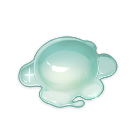Slime Concentrate
Slime Concentrate
Trophies
3★
Character and Weapon Enhancement Material
Concentrated slime essence. When left alone, it will begin to move on its own.
Sources:
Crafted
Used by character ascensions and talents:


Used by weapon ascensions:
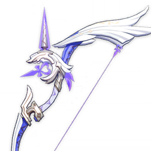
Amos' Bow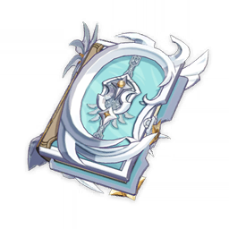
Lost Prayer to the Sacred Winds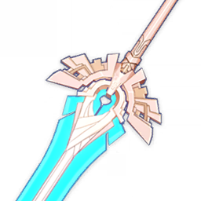
Skyward Pride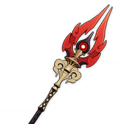
Staff of Homa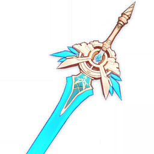
Skyward Blade
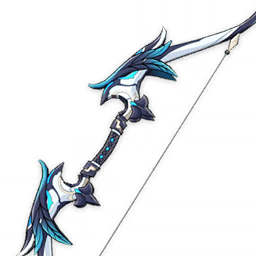
Alley Hunter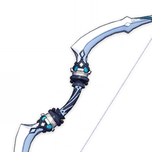
Sacrificial Bow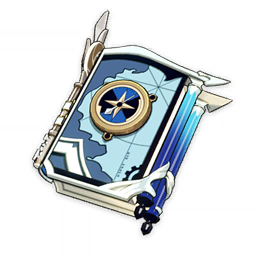
Mappa Mare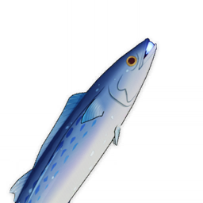
Luxurious Sea-Lord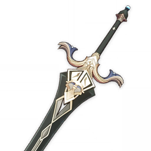
Royal Greatsword
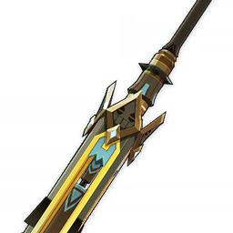
Talking Stick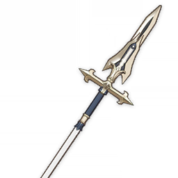
Favonius Lance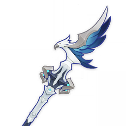
Missive Windspear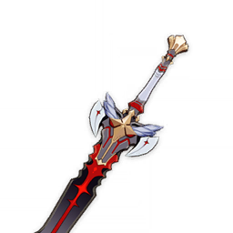
The Black Sword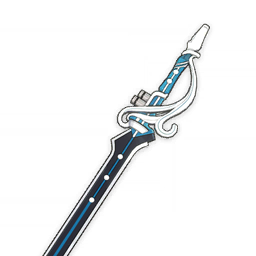
The Flute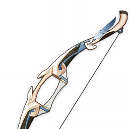
Sharpshooter's Oath
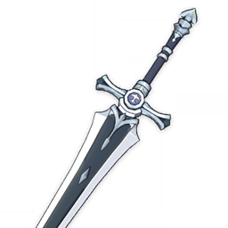
White Iron Greatsword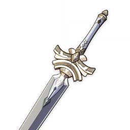
Harbinger of Dawn